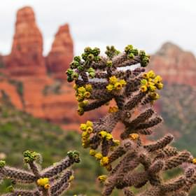

Фото и видео
Не можете решиться на путешествие из-за курса? Фотографии помогут вам забыть о политике и экономике.
-

Неродные просторы
1350
-
 Местная растительность
143
-

Дорога на север
96
-

Мост дьявола
254


Все еще сомневаетесь?
Смотрите видеопрезентацию и скорее за билетами, пока они не подорожали в очередной раз!